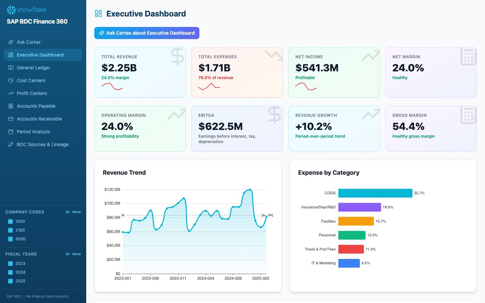

Finance 360
Live, AI-powered finance analytics from SAP BDC standard data products, with Ask Cortex on every page and a Cortex Agent in Snowflake Intelligence.
9 pages: Ask Cortex · Executive Dashboard · General Ledger · Cost Centers · Profit Centers · Accounts Payable · Accounts Receivable · Period Analysis · BDC Sources & Lineage